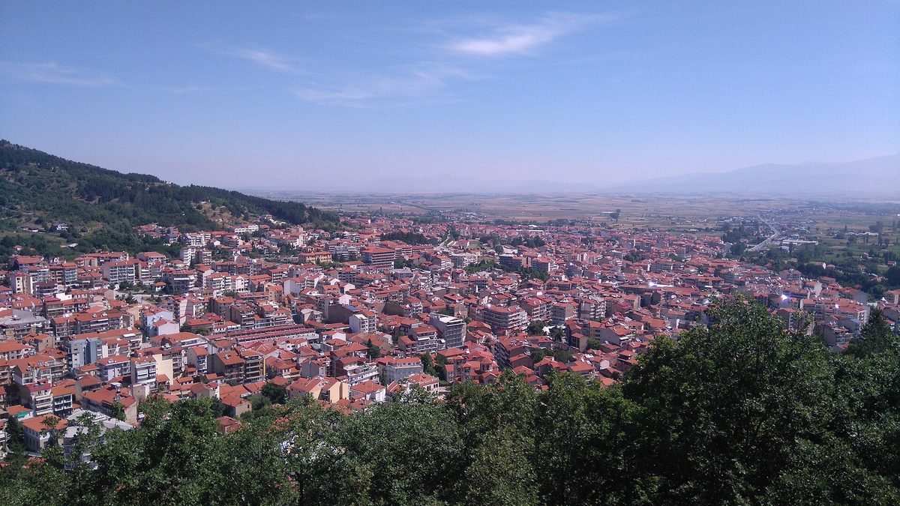

그리스 서마케도니아 에너지공동체 태양광 800건 중 계통 편입 268건…가동은 186건, 453건은 취소

배전망 운영사 의회 제출 자료, 477건은 계통 여유 용량 부족으로 연결 못 해…변전소 변압기 증설로 71건 53.2MW에 확정 연결 제안, 2029년 프톨레마이다 새 변전소
그리스 북부 서마케도니아에서 에너지공동체가 2019년부터 올해까지 낸 태양광 계통 연결 신청 800건(640.6MW) 가운데 전력망에 편입된 것은 268건(191.3MW)으로 3건 중 1건꼴에 그쳤다. 그리스 배전망 운영사 ΔΕΔΔΗΕ(HEDNO)가 의회에 낸 자료를 보면, 편입된 268건 가운데 실제 가동 중인 설비는 186건이고 76건은 연결 계약을 맺은 단계, 6건은 확정 연결 제안을 받은 단계다. 반면 477건은 연결할 수 없는 상태로, 이 가운데 24건만 유효한 신청으로 대기 중이고 나머지 453건은 취소됐다. 배전망 운영사는 이를 지역 전력망의 여유 용량이 모자라 망 보강 투자가 필요하다는 방증으로 설명했다. 운영사는 법 4951/2022에 따라 에너지공동체 사업에 변전소당 10MW의 추가 수용 한도를 적용하고 있으며, 플로리나·에오르데아·그레베나·멜리티 변전소에 새 변압기를 달아 에너지공동체 사업 71건(53.2MW)에 확정 연결 제안을 내줬다. 새 5개년 망 개발계획에는 프톨레마이다에 고압·중압 변전소를 새로 짓는 사업이 들어 있으며, 2029년 완공 예정이다.
시민에너지 관점
신청 용량 640.6MW 가운데 전력망에 들어간 것은 191.3MW, 그중에서도 실제로 돌아가는 설비는 186건뿐이라는 숫자는 공동체가 부지와 돈을 모아도 전기를 보낼 길이 없으면 사업이 멈춘다는 것을 보여 준다. 망이 모자라면 큰 사업부터 받는 편이 효율적이라는 반론이 나올 수 있지만, 그리스는 에너지공동체 몫으로 변전소당 10MW를 법으로 따로 떼어 두었기에 변압기를 늘리자 공동체 사업 71건이 연결 길을 얻었다. 네덜란드도 전력망 혼잡이 심해지자 먼저 줄을 선 순서가 아니라 사회적 필요를 따져 접속 순서를 정할 수 있게 규칙을 고쳤다. 국내에서도 주민참여 태양광을 늘리려면 변전소마다 주민·공동체 사업 몫을 정하고, 망 보강 계획에 그 몫을 먼저 반영해야 한다.
출처: 뉴스잇(NewsIT) 2026-10-26 하리스 아포스포리스(Χάρης Αποσπόρης) 원문 보기
ギリシャ西マケドニア、エネルギー共同体の太陽光800件のうち系統編入は268件…稼働は186件、453件は取り消し
配電網運営会社が議会に提出した資料、477件は系統の空き容量不足で接続できず…変電所の変圧器増設で71件53.2MWに確定接続提案、2029年にプトレマイダ新変電所
ギリシャ北部の西マケドニア地方で、エネルギー共同体が2019年から今年までに出した太陽光の系統接続申請800件（640.6MW）のうち、電力網に編入されたのは268件（191.3MW）と、3件に1件の割合にとどまった。ギリシャの配電網運営会社ΔΕΔΔΗΕ（HEDNO）が議会に提出した資料によると、編入された268件のうち実際に稼働している設備は186件で、76件は接続契約を結んだ段階、6件は確定接続提案を受けた段階だ。一方、477件は接続できない状態で、このうち有効な申請として待機しているのは24件だけで、残る453件は取り消された。配電網運営会社は、これを地域の電力網の空き容量が足りず、系統増強への投資が必要であることの表れだと説明した。同社は法律4951/2022に基づき、エネルギー共同体の事業に変電所1カ所当たり10MWの追加受け入れ枠を適用しており、フロリナ・エオルデア・グレヴェナ・メリティの変電所に新しい変圧器を設置して、エネルギー共同体の事業71件（53.2MW）に確定接続提案を出した。新たな5カ年の系統開発計画にはプトレマイダに高圧・中圧変電所を新設する事業が盛り込まれており、2029年に完成する予定だ。
市民エネルギーの視点
申請容量640.6MWのうち電力網に入ったのは191.3MW、そのうち実際に動いている設備は186件にすぎないという数字は、共同体が土地と資金を集めても電気を送る道がなければ事業が止まることを示している。系統が足りないなら大規模事業から受け入れるほうが効率的だという反論もありうるが、ギリシャはエネルギー共同体の枠として変電所当たり10MWを法律で別に確保していたからこそ、変圧器を増やしたときに共同体の事業71件が接続の道を得た。オランダも系統混雑が深刻になると、先着順ではなく社会的な必要性を考慮して接続の順番を決められるようルールを改めた。韓国でも住民参加型の太陽光を増やすには、変電所ごとに住民・共同体事業の枠を定め、系統増強計画にその枠をまず反映させるべきだ。
出典: ニューズイット（NewsIT） 2026-10-26 ハリス・アポスポリス（Χάρης Αποσπόρης） 原文を読む
希腊西马其顿能源社区光伏项目800宗中268宗纳入电网，已投运186宗，453宗被取消
配电网运营商向议会提交的文件显示，477宗因电网剩余容量不足无法接入；变电站加装变压器后71宗共53.2MW获得确定接入方案，托勒密达新变电站预计2029年建成
希腊北部西马其顿地区的能源社区自2019年至今年共提交光伏并网申请800宗（640.6MW），其中纳入电网的只有268宗（191.3MW），约为三分之一。根据希腊配电网运营商ΔΕΔΔΗΕ（HEDNO）提交议会的文件，在纳入电网的268宗中，实际投运的设施为186宗，76宗处于已签订接入合同阶段，6宗处于已获得确定接入方案阶段。与此相对，477宗处于无法接入状态，其中仅24宗作为有效申请仍在等待，其余453宗已被取消。配电网运营商称，这表明当地电网剩余容量不足，需要投资加强电网。该运营商依据第4951/2022号法律，对能源社区项目适用每座变电站额外10MW的接纳上限，并在弗洛里纳、埃奥尔代亚、格雷韦纳和梅利蒂变电站加装了新变压器，向71宗能源社区项目（53.2MW）发出了确定接入方案。新的五年电网发展规划包括在托勒密达新建一座高压/中压变电站，预计2029年完工。
市民能源视角
申请容量640.6MW中只有191.3MW进入电网，其中真正运行的设施仅186宗，这组数字说明，即使社区筹集了土地和资金，如果没有送电通道，项目也会停滞。有人可能会说电网不足时先接纳大型项目更有效率，但正因为希腊用法律为能源社区单独留出每座变电站10MW的份额，增加变压器之后才有71宗社区项目获得了接入通道。荷兰在电网拥堵加剧后，也修改规则，使接入顺序可以不按先来后到，而是考虑社会需要来确定。韩国若要扩大居民参与型光伏，也应为每座变电站规定居民和社区项目的份额，并在电网加强规划中优先体现这一份额。
来源: NewsIT 2026-10-26 哈里斯·阿波斯波里斯（Χάρης Αποσπόρης） 查看原文
In Greece's Western Macedonia, 268 of 800 energy community solar applications have been integrated into the grid, 186 are operating and 453 have been cancelled
Distribution operator's document to parliament says 477 projects cannot connect for lack of grid capacity; new substation transformers bring firm connection offers for 71 projects totalling 53.2 MW, with a new Ptolemaida substation due in 2029
Of the 800 solar grid connection applications (640.6 MW) filed by energy communities in northern Greece's Western Macedonia region from 2019 to this year, only 268 (191.3 MW) have been integrated into the grid, roughly one in three. According to a document that Greek distribution system operator ΔΕΔΔΗΕ (HEDNO) sent to parliament, 186 of those 268 are in operation, 76 have signed connection contracts and 6 have received firm connection offers. On the other side, 477 projects cannot be connected; of these, only 24 remain as active pending applications, while the other 453 have been cancelled. The operator said this reflects a shortage of available capacity on the local network and the need for investment to reinforce it. It is applying the additional 10 MW per substation that Law 4951/2022 sets aside for energy community projects, and after installing new transformers at the Florina, Eordaia, Grevena and Meliti substations it has issued firm connection offers to 71 energy community projects totalling 53.2 MW. Its new five-year network development plan includes a new high-to-medium-voltage substation in Ptolemaida, due for completion in 2029.
Citizen Energy View
Of 640.6 MW applied for, 191.3 MW has made it onto the grid and only 186 projects are actually running, which shows that even when a community gathers the land and the money, a project stalls if there is no way to send the power out. Some may argue that when the grid is short, it is more efficient to take large projects first, but it was precisely because Greece reserved 10 MW per substation for energy communities in law that 71 community projects found a path to connection once transformers were added. The Netherlands, too, changed its rules as grid congestion worsened so that connection order can reflect social need rather than first come, first served. If Korea wants more resident-participation solar, it should set a share for resident and community projects at each substation and build that share into grid reinforcement plans first.
Source: NewsIT 2026-10-26 Charis Aposporis Read the original